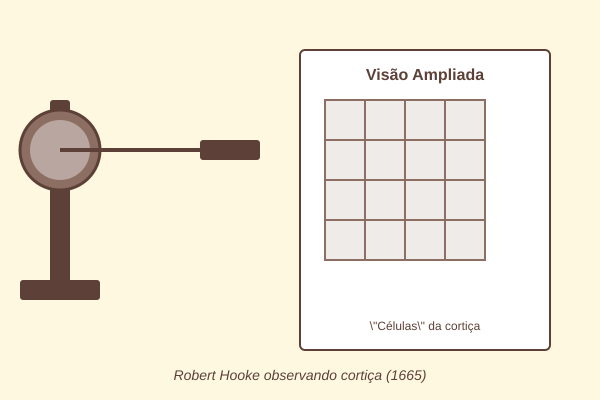
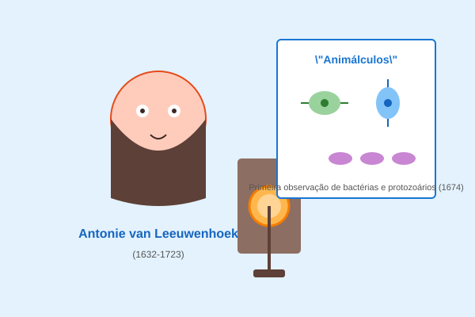

📖 Londres, 1665: O Início de Uma Revolução
A cidade de Londres ainda se recuperava do devastador Grande Incêndio. Nas ruas de paralelepípedos, comerciantes retomavam suas atividades enquanto a recém-criada Royal Society começava a reunir algumas das mentes mais brilhantes da época.
Entre elas estava Robert Hooke, um homem de curiosidade insaciável. Hooke não era apenas um cientista; era inventor, arquiteto e artista. Sua ferramenta mais preciosa? Um microscópio rudimentar que ele mesmo havia aperfeiçoado com lentes cuidadosamente polidas.
Um dia, Hooke pegou um pedaço de cortiça — aquele material leve usado em rolhas de vinho. Ao observá-lo sob o microscópio, algo extraordinário aconteceu: ele viu pequenos compartimentos vazios, organizados como os quartos de um mosteiro ou as células de uma colmeia.
"Descobri que a cortiça é feita de pequenas caixas vazias, que chamei de células, pois me lembraram as celas onde monges vivem em reclusão."
— Robert Hooke, Micrographia (1665)

🔍 Antonie van Leeuwenhoek: O Pai da Microbiologia
Enquanto Hooke observava células mortas na cortiça, um comerciante holandês de tecidos fazia descobertas ainda mais impressionantes. Antonie van Leeuwenhoek, sem formação acadêmica formal, construiu microscópios com lentes extremamente potentes para sua época.
Em 1674, Leeuwenhoek observou uma gota d'água de um lago e ficou chocante: estava cheia de "animálculos" (pequenos animais) se movendo! Ele havia descoberto os protozoários e, posteriormente, as bactérias.
Em cartas à Royal Society, Leeuwenhoek descreveu esses organismos microscópicos com detalhes impressionantes, abrindo caminho para o estudo da vida invisível a olho nu.

🧬 A Formulação da Teoria Celular
Duas décadas depois, dois cientistas alemães trabalhavam independentemente em suas pesquisas botânicas e zoológicas:
- Matthias Schleiden (botânico) concluiu que todos os vegetais são formados por células.
- Theodor Schwann (zoólogo) chegou à mesma conclusão para os animais.
Em 1839, eles se reuniram e formularam juntos os dois primeiros pilares da Teoria Celular:
- Todos os seres vivos são formados por células.
- A célula é a unidade estrutural e funcional básica dos organismos.
Pouco depois, Rudolf Virchow adicionou o terceiro pilar fundamental: "Omnis cellula e cellula" — Toda célula surge de outra célula preexistente.
⚡ Procariontes vs Eucariontes: A Grande Divisão
Com o avanço da microscopia eletrônica no século XX, os cientistas descobriram que existem dois tipos fundamentais de células:
| Característica | Procarionte | Eucarionte |
|---|---|---|
| Núcleo definido | ❌ Não | ✅ Sim |
| Organelas membranosas | ❌ Não | ✅ Sim |
| Tamanho típico | 1-10 μm | 10-100 μm |
| Exemplos | Bactérias | Animais, Plantas, Fungos |